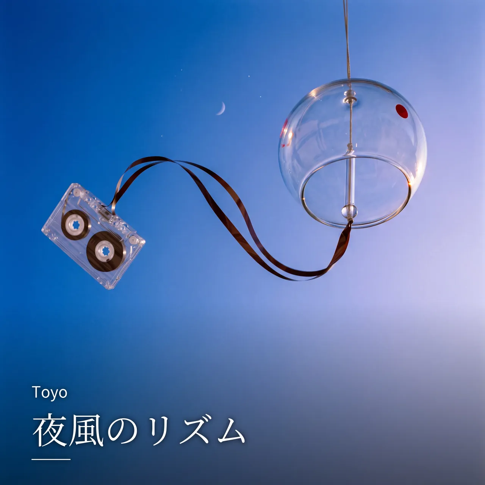

全曲 / 夜風のリズム

NEW
夜風のリズム
Toyo · lo-fi soul / jazzy hip-hop · 夜ひとりで / 作業・集中
LYRICS
yeah... feel the night breeze 街のノイズが遠くに溶けて 古いスピーカーから流れるmelody 時間はslowに流れていく 誰もいない道の上、影が踊る 消えかけた信号の赤 あの日の言葉がよみがえる ため息まじりの夜の中で 僕はまだ音に揺れている 夜風のリズム 心をさらって 過去も未来もいらない tonight Take it slow, let it flow 静かに夢の中へ 夜風のリズム 抱かれていたい このまま消えてもいい light いつものカフェのネオンの光 グラスに映る揺れる月 記憶の中で笑う君が 今もリズムの中にいる 古いカセットのノイズの奥 聴こえるのはあの日のrap 失くしたものと手にした今 混ざり合って優しく光る 夜風のリズム 心をさらって 見えない未来でもいい tonight Take it slow, let it flow 沈む街を包むlight 夜風のリズム 抱かれていたい もう少しこのままでride yeah… just the night vibe 時計の針 止めたまま 光も音も 遠ざかる この瞬間にすべてを預けて 夜風のリズム 心をさらって 忘れた痛みも優しく Take it slow, let it flow 夢の続きへもう一度 夜風のリズム 抱かれていたい 終わらない夜のまま good night... just vibin’ through the night
NEXT
次に聴くなら

FOLLOW
新曲を、いちばん早く。
Spotify でフォローすると、新曲が「Release Radar」に自動で届きます。